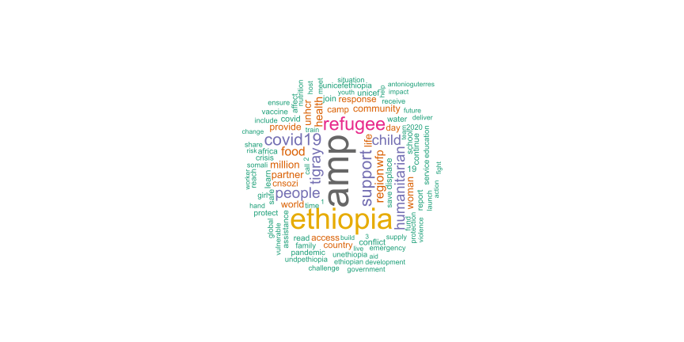

TEXT ANALYSIS
set.seed(1234)
wordcloud(words = word_count_lemmatize$lemmatize, freq = word_count_lemmatize$n, min.freq = 20,
max.words=100, random.order=FALSE, rot.per=0.40,
colors=brewer.pal(8, "Dark2"))
v1 <- ggplot(word_count_lemmatize[1:50,], aes(x=reorder(lemmatize, -n), y=n)) +
geom_bar(stat="identity", width=0.6, fill="darkseagreen3") +
theme_minimal() +
theme(axis.text.x = element_text(angle=90, hjust=1, vjust=0.2),
plot.caption = element_text(hjust = 0),
panel.grid.major.x = element_blank()) +
xlab("Lemmatized Word") + # for the x axis label
ylab("Frequency") + # for the y axis label
coord_cartesian(ylim=c(0, 2600))
# Print the plot
girafe(ggobj = v1, width_svg = 13, height_svg = 7,
options = list(opts_sizing(rescale = TRUE, width = 1.0)))v2 <- ggplot(bigrams_united[1:50,], aes(x=reorder(bigram, n), y=n)) +
geom_bar(stat="identity", width=0.6, fill="darkseagreen2") +
theme_minimal() +
theme(axis.text.x = element_text(hjust=1, vjust=0.2),
plot.caption = element_text(hjust = 0),
panel.grid.major.x = element_blank()) +
xlab("Bigram") + # for the x axis label
ylab("Frequency") + # for the y axis label
coord_flip()
# Print the plot
girafe(ggobj = v2, width_svg = 13, height_svg = 13,
options = list(opts_sizing(rescale = TRUE, width = 1.0)))df<-afinn_165_sentiment
df$sentiment <- factor(df$sentiment)
df <- df %>% mutate(id = row_number())
afinn_165_v <- ggplot(data=df, aes(x=sentiment, y=n, fill=sentiment)) +
geom_boxplot(alpha=0.5) +
scale_y_continuous(trans='log2') +
geom_jitter_interactive(aes(color=sentiment, tooltip = word, data_id = id), size=1, alpha=0.8) +
theme_minimal() +
theme(panel.background = element_blank()) +
theme(panel.grid.major.x = element_blank()) +
theme(panel.grid.minor.x = element_blank()) +
theme(panel.grid.major.y = element_blank()) +
theme(panel.grid.minor.y = element_blank()) +
theme(text = element_text(size=20),
legend.position="none",
plot.title = element_text(size=11)
) +
xlab("")
girafe(ggobj = afinn_165_v, width_svg = 13, height_svg = 7,
options = list(opts_sizing(rescale = TRUE, width = 1.0)))v3 <- ggplot(not_words[1:10,], aes(x=reorder(words, n), y=n)) +
geom_bar(stat="identity", width=0.6, fill="darkseagreen2") +
theme_minimal() +
theme(axis.text.x = element_text(hjust=1, vjust=0.2),
plot.caption = element_text(hjust = 0),
panel.grid.major.x = element_blank()) +
xlab("Not words") + # for the x axis label
ylab("Frequency") + # for the y axis label
coord_flip()
# Print the plot
girafe(ggobj = v3, width_svg = 13, height_svg = 7,
options = list(opts_sizing(rescale = TRUE, width = 1.0)))v4 <- ggplot(no_words, aes(x=reorder(words, n), y=n)) +
geom_bar(stat="identity", width=0.6, fill="darkseagreen2") +
theme_minimal() +
theme(axis.text.x = element_text(hjust=1, vjust=0.2),
plot.caption = element_text(hjust = 0),
panel.grid.major.x = element_blank()) +
xlab("No words") + # for the x axis label
ylab("Frequency") + # for the y axis label
coord_flip()
# Print the plot
girafe(ggobj = v4, width_svg = 13, height_svg = 7,
options = list(opts_sizing(rescale = TRUE, width = 1.0)))v4 <- ggplot(never_words, aes(x=reorder(words, n), y=n)) +
geom_bar(stat="identity", width=0.6, fill="darkseagreen2") +
theme_minimal() +
theme(axis.text.x = element_text(hjust=1, vjust=0.2),
plot.caption = element_text(hjust = 0),
panel.grid.major.x = element_blank()) +
xlab("Never words") + # for the x axis label
ylab("Frequency") + # for the y axis label
coord_flip()
# Print the plot
girafe(ggobj = v4, width_svg = 13, height_svg = 7,
options = list(opts_sizing(rescale = TRUE, width = 1.0)))v5 <- ggplot(without_words, aes(x=reorder(words, n), y=n)) +
geom_bar(stat="identity", width=0.6, fill="darkseagreen2") +
theme_minimal() +
theme(axis.text.x = element_text(hjust=1, vjust=0.2),
plot.caption = element_text(hjust = 0),
panel.grid.major.x = element_blank()) +
xlab("Without words") + # for the x axis label
ylab("Frequency") + # for the y axis label
coord_flip()
# Print the plot
girafe(ggobj = v5, width_svg = 13, height_svg = 7,
options = list(opts_sizing(rescale = TRUE, width = 1.0)))